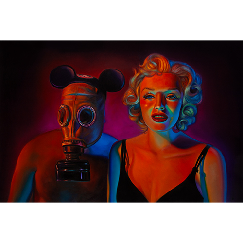

Exhibitions
Lazarus Rising, Elms Lesters Painting Rooms, London, United Kingdom, May 8–June 6, 2009.
Literature
Ron English, Lazarus Rising (London: Elms Lesters Painting Rooms, 2009), p. 17.
Notes
The work’s inclusion in Lazarus Rising is documented in the exhibition catalogue.

This work references Marilyn Monroe.